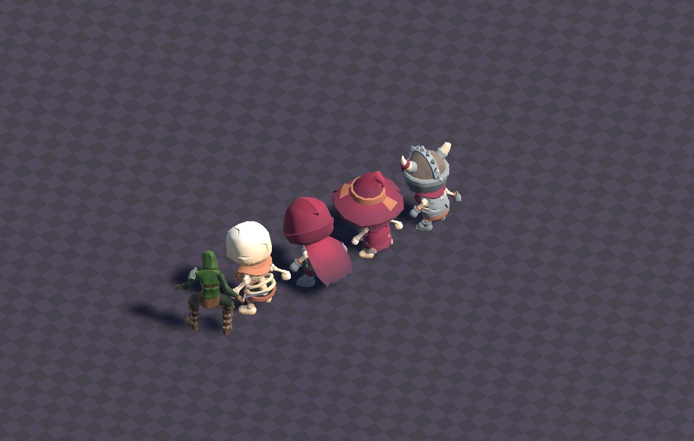
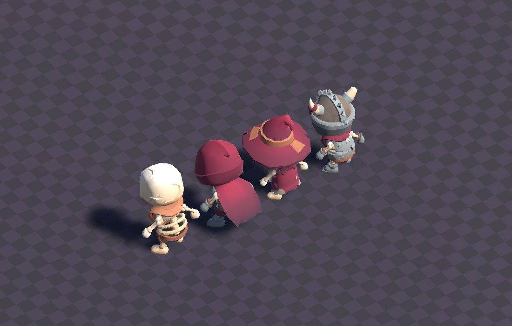
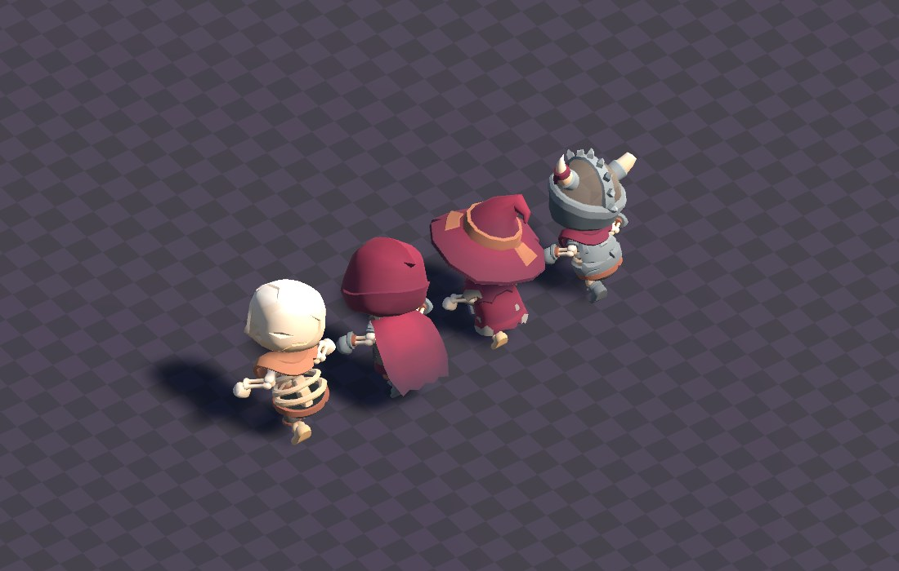
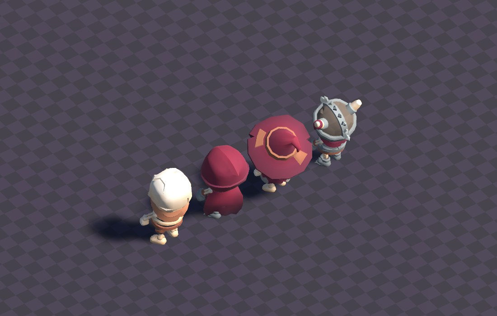
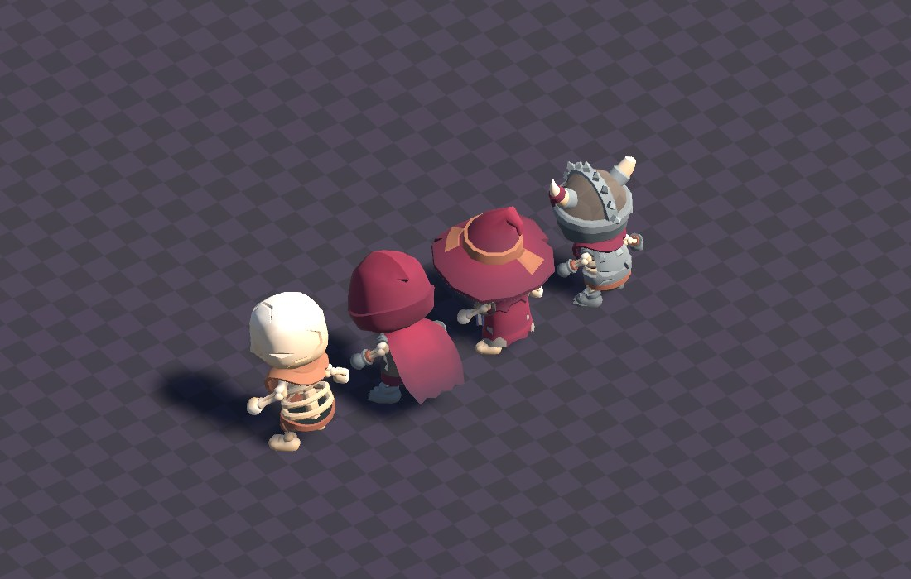
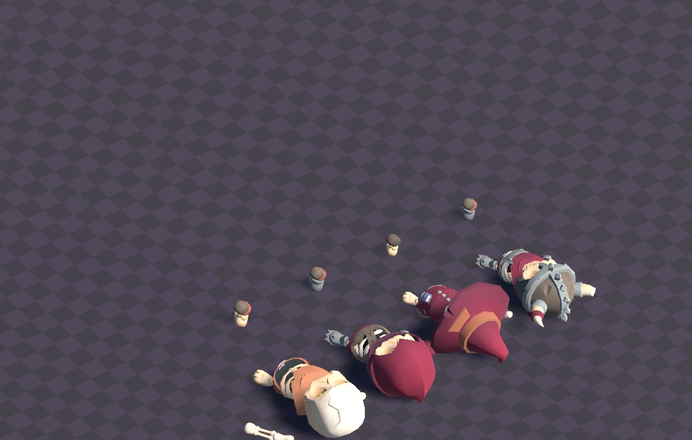

地城迴響 · 素材驗證
KayKit 骷髏包（CC0）匯入 Unity 之後的實際渲染。等角相機、即時光影、即時投影。
先講清楚這是什麼、不是什麼。
這些是素材驗證截圖——確認模型載得進來、動畫綁得上、風格對不對。 不是 Demo 畫面。地城房間、玩家跟骷髏的實際戰鬥、虛擬搖桿操作、 換裝按鈕，這些都還沒做。
畫面裡的格子地板是暫時的除錯用底圖，不是關卡美術。

兩家素材放在一起，體型與畫風的落差看得出來。我量了數字：
| 身高 | 頭高 | 頭身比 | |
|---|---|---|---|
| 玩家（Quaternius） | 2.07 m | 0.46 m | 1 : 4.5 |
| 骷髏（KayKit） | 1.70 m | 0.67 m | 1 : 2.5 |
身高差 18% 可以調，頭身比 4.5 對 2.5 調不掉。那是寫實比例對上大頭 卡通比例，縮放解決不了。這件事要你決定方向，三個選項在下面。

Skeletons_Idle）。左起：骷髏兵、盜賊、法師、戰士。
四隻的剪影與體型差異是素材包自帶的，不用另外做。
Skeletons_Walking）。骷髏專屬的走路版本，
步態比通用版更蹣跚。
Melee_1H_Attack_Chop）。
骷髏兵的肋骨在這個角度看得很清楚。
Skeletons_Awaken_Standing）。
素材包還附了「從地上爬起來」的版本（Awaken_Floor、
Spawn_Ground）——骷髏躺在地上、玩家靠近才爬起來，
這在地城房間裡是免費的氣氛。
Skeletons_Death）。
注意畫面中央那四個立著的小圓柱——四隻都倒下了，卻各留一截在原地。
那是我還沒查清楚的東西，不是設計。已列進待辦。| 項目 | 結果 |
|---|---|
| 四隻骷髏模型 | 都載入成功，各綁 83 個動畫 clip |
| 骨架綁定 | clip 曲線路徑與模型階層逐字相同 |
| 動畫實動 | 35 個取樣 transform 有 22 個在位移 |
| 授權 | CC0，可商用免署名 |
| 花費 | $0 |
順帶修掉一個沒預期到的問題：整個專案的色彩空間是 Gamma，畫面全部洗白。
地板程式裡設定是深紫灰，畫面上卻是淺紫；骷髏該是骨白卻渲染成粉紅。 改成 Linear 並把環境光壓下來之後，才是上面這些截圖的樣子。 這只影響 DnD 這個獨立專案，碰不到正在出貨的 App。
我的建議是先照現狀把 Demo 做完看實機效果再決定——在手機上看跟在截圖上看 感受差很多。同時我會去查 B 選項到底有沒有骷髏，那是免費的資訊。